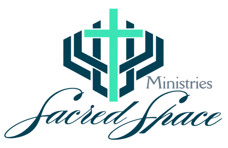

There's room
for you here.
for you here.
OPTION 01
Open & welcoming
The original experience, with spacious sections and three invitation cards.
Experience option 1 ↗
Pastor's experience preview
Choose a design to experience the real connection form, worship links, and community updates. Each has a visible “Back to options” button so you can try the others.
The original experience, with spacious sections and three invitation cards.
Experience option 1 ↗A condensed, minimal layout. Three easy choices, cream tones, and teal accents.
Experience option 2 ↗Glowing amber lights, rich brown, black, teal, and cream in a condensed layout.
Experience option 3 ↗Designed for phone, tablet, and desktop. The same Breeze form is used in every option. Live indicators are clearly labeled demonstrations.
Illustrative imagery created for these design previews.